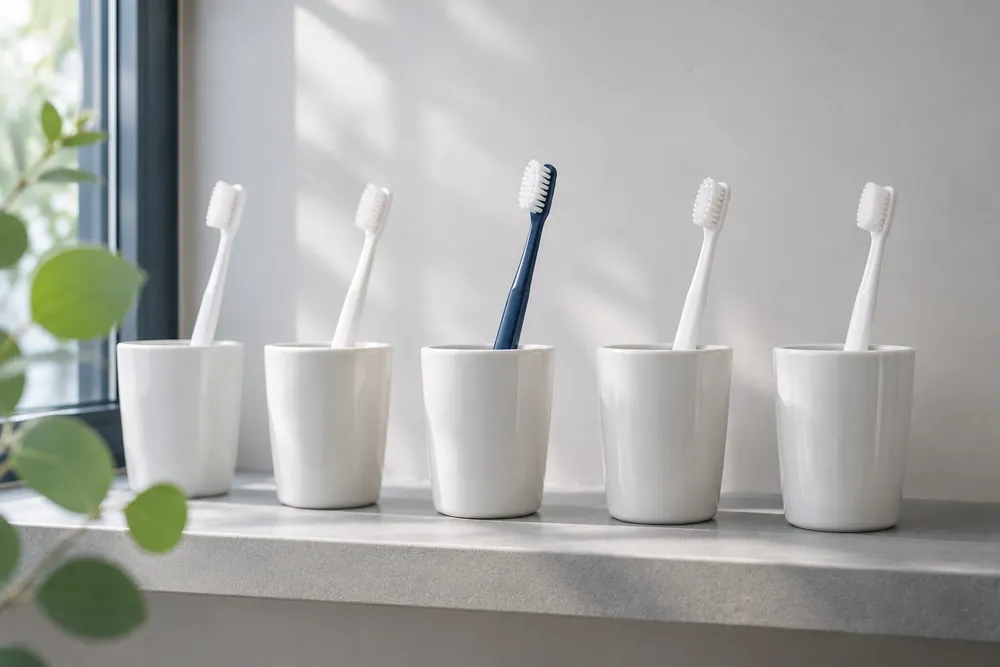

УТП стоматологии: как объяснить, чем клиника отличается
«Современное оборудование, опытные врачи, доступные цены» пишут о себе почти все клиники, поэтому пациент этих слов не замечает. УТП стоматологии это не слоган, а ответ на вопрос «почему записаться именно сюда», который можно проверить. Разбираем, как его найти и как не нарушить при этом закон о рекламе.

С чего начать: целевая аудитория стоматологии
«Все, у кого есть зубы» это не аудитория. Пациенты одной клиники приходят с разными задачами, и каждой группе важно своё.
| Группа | С чем приходит | Что для неё важно |
|---|---|---|
| Острая боль | Нужно попасть сегодня | Близко, время приёма, цена первого визита |
| Имплантация и протезирование | Выбирает неделями, сравнивает три или четыре клиники | Врач, цена по этапам, гарантии клиники на работу, рассрочка |
| Ортодонтия | Взрослые и родители подростков | Цена всего лечения, срок, сколько визитов |
| Родители с детьми | Ребёнок боится, нужен врач, который умеет с детьми | Детский врач, как проходит первый визит, лечение во сне |
| Постоянные пациенты | Осмотр и гигиена раз в полгода | Свой врач, удобная запись, напоминания |
| Пациенты с высоким чеком | Полное восстановление зубов | Опыт врача в таких работах, план лечения, сопровождение |
Откуда брать сведения: вопросы пациентов на звонках и консультациях, отзывы о клинике и о соседях, запросы в поиске. Если половина звонков начинается со слов «а сколько всего выйдет», цена по этапам важнее рассказа о микроскопе.
Конкуренты стоматологии: что сравнивать
Конкуренты это не все клиники города, а те три или пять, которые пациент видит рядом с вами: в рекламе по вашей услуге, на картах в вашем районе, в списке на ПроДокторов. Выпишите по каждой:
- что обещает в заголовке сайта и объявлений;
- есть ли цены и что в них входит;
- как представлены врачи;
- рейтинг и число отзывов, на что жалуются;
- какой первый шаг предлагает: консультация, снимок, расчёт.
После этого видно, что говорят все, и что не говорит никто. Второе и есть место для вашего предложения.
Позиционирование стоматологии: из чего выбирать
- Специализация. Клиника имплантации, детская стоматология, ортодонтический центр.
- Врач. Клиника известного в городе хирурга или ортодонта.
- Порядок работы. План лечения с ценой на первой консультации, все специалисты в одном месте, лечение за одно посещение там, где это возможно.
- Цена. Фиксированная цена по договору, цена «под ключ», рассрочка от клиники.
- Удобство. Работа до позднего вечера и в выходные, парковка, рядом с метро.
- Отношение. Клиника для тех, кто боится: седация, подробное объяснение, время на вопросы.
Выбрать нужно одно или два. Клиника «для всех и про всё» не запоминается.
УТП стоматологии: примеры
| Слабо | Сильнее | Почему |
|---|---|---|
| Доступные цены | Цена имплантации по этапам записана в договоре до начала лечения | Можно проверить, снимает страх доплат |
| Опытные врачи | Имплантацию проводит хирург, который занимается только ею | Конкретный факт о враче |
| Современное оборудование | КТ делаем в клинике в день консультации | Понятная польза: не нужно ехать в другой центр |
| Индивидуальный подход | На первой консультации вы получаете план лечения с двумя вариантами и ценой каждого | Описывает, что произойдёт |
| Лечим без боли | Перед лечением врач объясняет, какая будет анестезия и чего ждать | Не обещает результат, который закон запрещает гарантировать |
| Детская стоматология | Первый визит ребёнка это знакомство с врачом и кабинетом, без лечения | Отвечает на главный страх родителей |
Все примеры условные. Писать можно только то, что клиника действительно делает каждый день: УТП, которое не подтверждается на приёме, превращается в отрицательный отзыв.
Проверка по закону
- Нельзя гарантировать результат лечения и безопасность.
- Нельзя называть себя лучшими без подтверждения.
- Нельзя сравнивать себя с другими клиниками некорректно.
- Нельзя ссылаться на случаи излечения и благодарности пациентов в рекламе.
Подробнее в статье о законе о рекламе медицинских услуг.
Где использовать УТП
В заголовке главной и страниц услуг, в объявлениях, в описании карточки на картах, в скрипте администратора. Везде одними и теми же словами. Если на сайте клиника обещает цену по этапам, а администратор говорит «цену скажет врач», УТП нет.
Позиционирование, сайт, карточки и отзывы собираем в одну систему: Комплексный маркетинг для стоматологии.